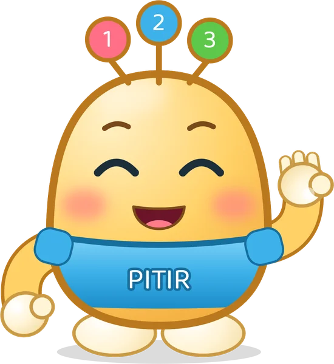

Kim o?
Ben Tıkır!
Kapımı çalan herkese şarkılarım, çizgi filmlerim ve oyunlarım açık. Haydi, içeri gel!
- 10şarkı
- 2çizgi film
- 8karakter

İzle, söyle, hareket et
Şarkılar
Tıkır'ın maceraları
Çizgi Filmler
Kısa bölümlerde Tıkır ve arkadaşları tanışıyor, oynuyor, birlikte sorun çözüyor.
Yeni bölümler yolda
Sıradaki maceralar hazırlanıyor.
Takvimde bugün ne var?
Önemli Gün ve Haftalar
Okul öncesinde kutlanan ve anılan gün ve haftalar için hazırlanan şarkı ve çizgi filmler.
-
24Kasım HazırlanıyorÖğretmenler Günü24 Kasım
-
12-18Aralık HazırlanıyorYerli Malı Haftası12-18 Aralık
-
23Nisan HazırlanıyorUlusal Egemenlik ve Çocuk Bayramı23 Nisan
Dokun, düşün, oyna
Tıkır ve arkadaşları ile oyunlar
Kısa ve sakin oyunlar. Yeni oyunlar eklendikçe burada görünecek.
Kapıda kim var?
Tıkır ve arkadaşları
Bir karaktere dokun, sesini dinle.
Ne öğreniyoruz?
Altı seri, tek bir dünya
Her klip bir seriye ait ve okul öncesi programındaki bir öğrenme alanı dikkate alınarak planlanıyor.
Sayılar
Sayma, karşılaştırma, büyük-orta-küçük, ölçme ve örüntüler.
5 şarkıGünlük Rutinler
Günaydın, yoklama, el yıkama: her gün aynı anda söylenen şarkılar.
3 şarkıGünlük Hayat
Beslenme, sağlık ve günlük yaşam becerileri.
1 şarkıDuygular ve Arkadaşlık
Selamlaşma, tanışma, sıra bekleme, paylaşma.
2 çizgi filmMerak ve Fen
Duyular, mevsimler, gökyüzü ve küçük deneyler.
YakındaRitim ve Hareket
Hızlı-yavaş, kuvvetli-hafif, dans ve beden perküsyonu.
YakındaEkranı kapat, oyna!
Şimdi sıra sende
Her klibin sonunda Tıkır bir görev verir. Görevler evde ya da sınıfta, ekran olmadan yapılır.
-
Yolcu Treni şarkısından
10 oyuncağını sıraya diz. Trene bindirir gibi tek tek say.
-
Kaç Elma Var? şarkısından
Dört parmağını göster. Şimdi bir parmağını indir: kaç kaldı?
-
Ellerimizi Yıkayalım şarkısından
Lavabonun başında şarkıyla birlikte ellerini yıka. İlk önce ne yaparız?
-
Günaydın! şarkısından
Sınıftaki ya da evdeki arkadaşına kendi seçtiğin selamı ver.
-
Burada mısın? şarkısından
Bugün kaç kişiyiz? Mandalları tek tek göster, birlikte say.
-
Lıkır'ın Bulutu şarkısından
Bir arkadaşınla oyna. O "yapma" derse hemen dur ve ona ne istediğini sor.
Etkinlik paketleri
Her klip için bir iki derste kullanılabilecek, okul öncesi programıyla uyumlu kapsamlı bir etkinlik paketi hazırlanmaktadır: boyama sayfaları, sayma kartları, oyun tahtaları ve öğretmen için ders akışı. İlk paket Yolcu Treni için düşünülmektedir.
Aileler ve öğretmenler için
Kısa izle, birlikte konuş, sonra oyna
Kısa klipler
Klipler 1,5-3 dakika sürüyor. Aile ve Sosyal Hizmetler Bakanlığı 3 yaş için günde en fazla 30, 6 yaş için en fazla 60 dakika ekran süresi öneriyor.
Birlikte izleme
Klibi durdurup "Kaç tane?", "Sonra ne yapacağız?" diye sormak izlemeyi öğrenmeye dönüştürür. Her klibin ayrıntısında konuşabileceğiniz konular var.
Sınıfta kullanım
Günlük rutin şarkıları her gün aynı geçişte (sabah, el yıkama) söylenecek biçimde hazırlandı. Kavram şarkılarından sonra somut materyalle çalışmayı öneriyoruz.
Güvenli site
Bu site üyelik ya da form içermez ve çocuklardan bilgi toplamaz. Videolar YouTube'un gelişmiş gizlilik moduyla gösterilir.
Araştırmalar ne diyor?
Kliplerimizi nasıl tasarlıyoruz?
"Sen söyle!" anları
Sunucunun soru sorup cevap beklediği programlarda çocukların sesli katılımı artıyor. Bu yüzden şarkılarımızda çocuğun cevap vereceği kısa boşluklar var.
Anderson ve ark., 2000, Media Psychology · doi
Aynı klip, birkaç kez
Aynı bölümü beş gün üst üste izleyen 3-5 yaş çocukların anlaması ve katılımı arttı. Her klibin bir hafta boyunca tekrar edilmesini öneriyoruz.
Crawley ve ark., 1999, Journal of Educational Psychology · doi
Soru sormak fark yaratıyor
Videoyu durdurup çocuğa soru soran ebeveynlerin çocuklarında hikâyeyi anlama ve kelime öğrenme daha yüksek bulundu.
Strouse ve ark., 2013, Developmental Psychology · doi
SSS
Sık sorulan sorular
Klipler ücretsiz mi?
Evet. Klipler YouTube'da, ekransız görevler bu sitede ücretsizdir.
Klipler hangi yaş için?
3-6 yaş için hazırlanıyor. Her klibin ayrıntısında önerilen yaş yazıyor; örneğin Yolcu Treni 1'den 10'a saydığı için 4 yaş ve üstü için öneriliyor.
Okul öncesi programıyla uyumlu mu?
Her klip, Millî Eğitim Bakanlığının okul öncesi eğitim programındaki bir öğrenme alanı dikkate alınarak planlanıyor ve bu alan klibin ayrıntısında belirtiliyor.
Çocuğum günde ne kadar izlemeli?
Aile ve Sosyal Hizmetler Bakanlığı 3 yaşına kadar ekrandan uzak durulmasını, 3 yaşta en fazla 30, 4 yaşta 40, 5 yaşta 50, 6 yaşta 60 dakika ekran süresini öneriyor. Bir iki klipten sonra ekranı kapatıp görevlere geçmenizi öneririz.
Sınıfta kullanabilir miyim?
Elbette. Klipleri ve ekransız görevleri sınıfınızda dilediğiniz gibi kullanabilirsiniz.
Bu site çocuğumdan bilgi topluyor mu?
Hayır. Sitede üyelik ya da form yok, çocuklardan bilgi istenmez. Ayrıntılar için gizlilik sayfasına bakabilirsiniz.